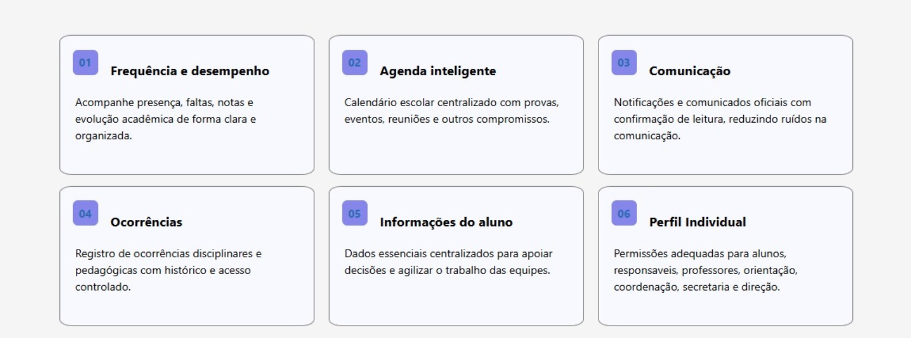
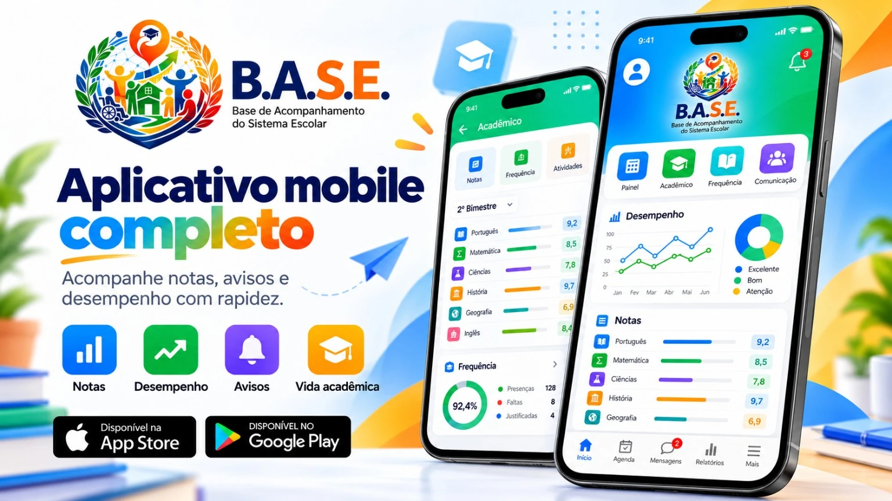

Frequência e desempenho
Acompanhe presença, faltas, notas e evolução acadêmica de forma clara e organizada.
Base de Acompanhamento do Sistema Escolar
O B.A.S.E. integra acompanhamento acadêmico, comunicação, agenda, ocorrências e informações do aluno em um único ambiente para escola, estudantes e responsáveis.

O projeto
Base de Acompanhamento do Sistema Escolar. Uma proposta digital para concentrar informações importantes da rotina escolar, facilitar o acompanhamento do aluno e reduzir ruídos na comunicação entre os diferentes perfis da escola.
A estrutura contempla alunos, responsáveis, professores, orientação, coordenação, secretaria e direção, com acesso adequado para cada perfil e informações organizadas em um só lugar.
Principais módulos
Os módulos abaixo representam o núcleo funcional do projeto para acompanhamento e gestão da rotina escolar.
Acompanhe presença, faltas, notas e evolução acadêmica de forma clara e organizada.
Calendário escolar centralizado com provas, eventos, reuniões e outros compromissos.
Notificações e comunicados oficiais com confirmação de leitura, reduzindo ruídos na comunicação.
Registro de ocorrências disciplinares e pedagógicas com histórico e acesso controlado.
Dados essenciais centralizados para apoiar decisões e agilizar o trabalho das equipes.
Permissões adequadas para alunos, responsáveis, professores, orientação, coordenação, secretaria e direção.

Sistema Web
Visão centralizada para alunos, frequência, relatórios, comunicação e acompanhamento da gestão escolar.
 Abrir imagem em tamanho original
Abrir imagem em tamanho original
Aplicativo Mobile
A proposta mobile concentra notas, desempenho, avisos, frequência, compromissos e informações da vida acadêmica.

Abrir imagem em tamanho originalEcossistema
Escola, estudantes, responsáveis e equipe pedagógica reunidos em um só ecossistema digital.
 Abrir imagem em tamanho original
Abrir imagem em tamanho original